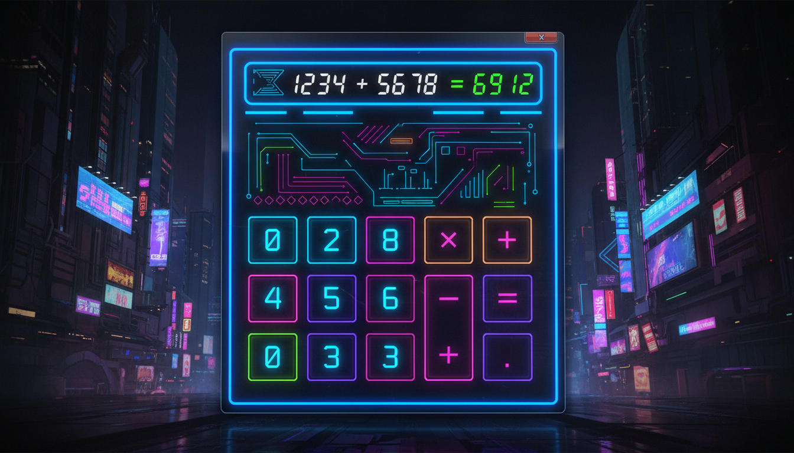

Створення повноцінного калькулятора

public ref class CalculatorForm : public Form {
private:
TextBox^ display;
double currentValue = 0;
double memory = 0;
String^ currentOperation = "";
bool newEntry = true;
public:
CalculatorForm() {
this->Text = "Калькулятор";
this->Size = Size(350, 450);
this->FormBorderStyle = FormBorderStyle::FixedSingle;
this->MaximizeBox = false;
this->BackColor = Color::FromArgb(30, 30, 50);
// Дисплей
display = gcnew TextBox();
display->Location = Point(10, 10);
display->Size = Size(310, 50);
display->ReadOnly = true;
display->TextAlign = HorizontalAlignment::Right;
display->Font = gcnew Font("Consolas", 20);
display->Text = "0";
this->Controls->Add(display);
// Кнопки цифр
array<String^>^ buttons = {
"7", "8", "9", "/",
"4", "5", "6", "*",
"1", "2", "3", "-",
"0", ".", "=", "+"
};
for (int i = 0; i < 16; i++) {
Button^ btn = gcnew Button();
btn->Text = buttons[i];
btn->Size = Size(70, 60);
btn->Location = Point(10 + (i % 4) * 78, 70 + (i / 4) * 68);
btn->Font = gcnew Font("Segoe UI", 14, FontStyle::Bold);
btn->Tag = buttons[i];
// Колір
if (buttons[i] == "=") {
btn->BackColor = Color::FromArgb(0, 150, 255);
} else if ("+-*/".Contains(buttons[i])) {
btn->BackColor = Color::FromArgb(60, 60, 90);
} else {
btn->BackColor = Color::FromArgb(50, 50, 70);
}
btn->ForeColor = Color::White;
btn->FlatStyle = FlatStyle::Flat;
btn->Click += gcnew EventHandler(
this, &CalculatorForm::OnButtonClick);
this->Controls->Add(btn);
}
}
void OnButtonClick(Object^ sender, EventArgs^ e) {
Button^ btn = (Button^)sender;
String^ val = btn->Text;
if (Char::IsDigit(val[0])) {
if (newEntry) {
display->Text = val;
newEntry = false;
} else {
display->Text += val;
}
}
else if (val == ".") {
if (!display->Text->Contains(".")) {
display->Text += ".";
}
}
else if (val == "=") {
Calculate();
}
else {
currentOperation = val;
currentValue = Convert::ToDouble(display->Text);
newEntry = true;
}
}
void Calculate() {
double newVal = Convert::ToDouble(display->Text);
double result = 0;
if (currentOperation == "+") result = currentValue + newVal;
else if (currentOperation == "-") result = currentValue - newVal;
else if (currentOperation == "*") result = currentValue * newVal;
else if (currentOperation == "/") {
if (newVal != 0) result = currentValue / newVal;
else { display->Text = "Error"; return; }
}
display->Text = result.ToString();
newEntry = true;
}
};